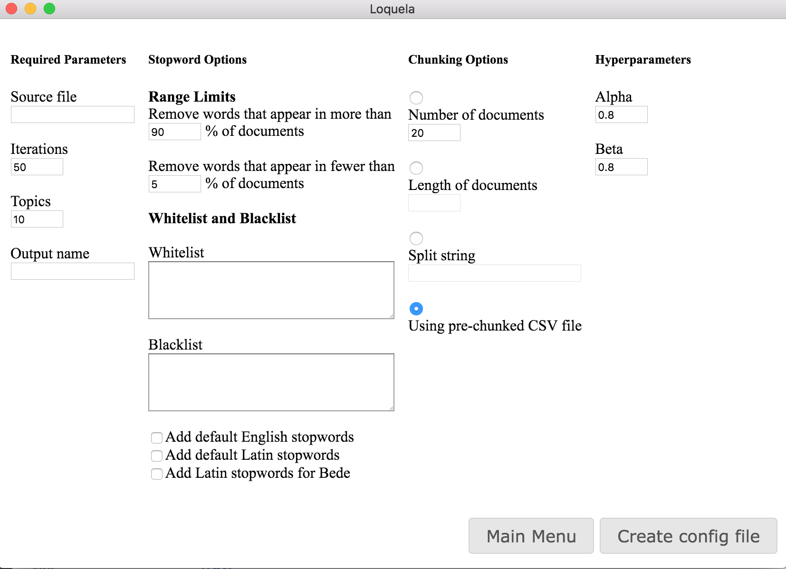

Objective
Our main objective was to keep in mind what a history professor might want out of our visualization. We asked a real history professor to get us on the right path. In addition, we researched different visualization possibilities for topic models. We selected the tools we felt would best allow a user to dive deep into the details of the topic models as well as inspect the more general trends across the corpus.
The Result
We settled on four visualizations. The metadata is important in order to gain an understanding of the parameters and scope of your input data. The wordcloud is important to verify the quality of the topics and begin to understand what they're about. The heatmap is important in order to discover where topics occur in the corpus and which topics co-occur. The annotated text tab is important to establish what is happening to the words themselves in terms of topic assignments.
A Workflow
As you might imagine, the tabs are laid out in such a way to promote a productive workflow for exploring topic models.
- The user first uploads their json file from the output of LDA. Then, they look at metadata to check whether they can immediately recognize and nickname any topics.
- Next, they look at the wordcloud to get an even better picture of what the topics are. They can return to metadata to nickname newly discovered topics.
- Next, the user may proceed to the heatmap tab, where interesting patterns may reveal themselves. Sometimes topics will occur in the corpus exactly where they are expected to. In other cases, the user may discover surprising patterns of occurrence.
- Finally, the user arrives at the annotated text tab, where they can see the words of the text and how each is assigned to topics. Here, the user can cite specific areas of the text which contribute to patterns in the topic model.
Tab Integration
The heatmap tab is integrated with the annotated text tab so that clicking in any heatmap takes you to that location of the text in the annotated text tab. Conversely, clicking on a tagged topic word in the annotated text tab will take you to the heatmap tab with the appropriate topic heatmap showing and with a line indicating the location of that word.

Config File Generator
On the start screen of Loquela, the user may choose to generate a configuration file for LDA. Loquela provides a form with all necessary parameters, preventing any illegal input. Submitting this form prompts Loquela to generate the appropriate configuration file which may be passed into LDA to run the algorithm with parameters of the user's choosing.
